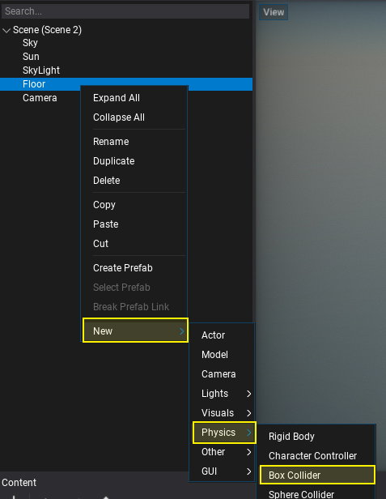
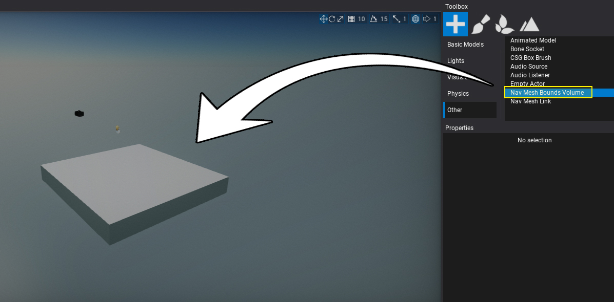
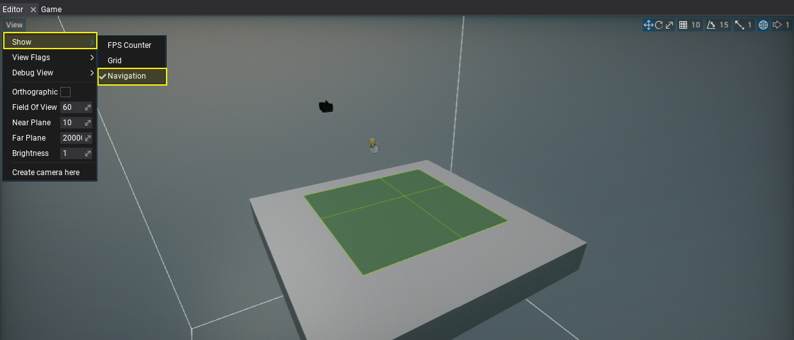

HOWTO: Create navmesh
In this tutorial, you will learn how to create navmesh for you scene.
1. Open a new scene
Firstly you will need to open scene. If you don't have any just use a Content Window context menu to create one.
2. Add collider
Use Toolbox Window or context menu in the Scene Tree Window to add collider to the floor model as showin below.

The navigation mesh generator uses physics collisions to define the environment of the level rather than meshes.
2. Add Nav Mesh Bounds Volume
Use Toolbox Window or context menu in the Scene Tree Window to add navigation mesh bounds actor. It is used to define the area of the level where navmesh should be generated.

3. See results
By default navmesh is auto-generated by Editor so now you can see it by enabling widget option View -> Show -> Navigation to preview the navmesh. To rebuild navmesh for the loaded scenes you can use option from main menu, which is Tools -> Build Nav Mesh.
